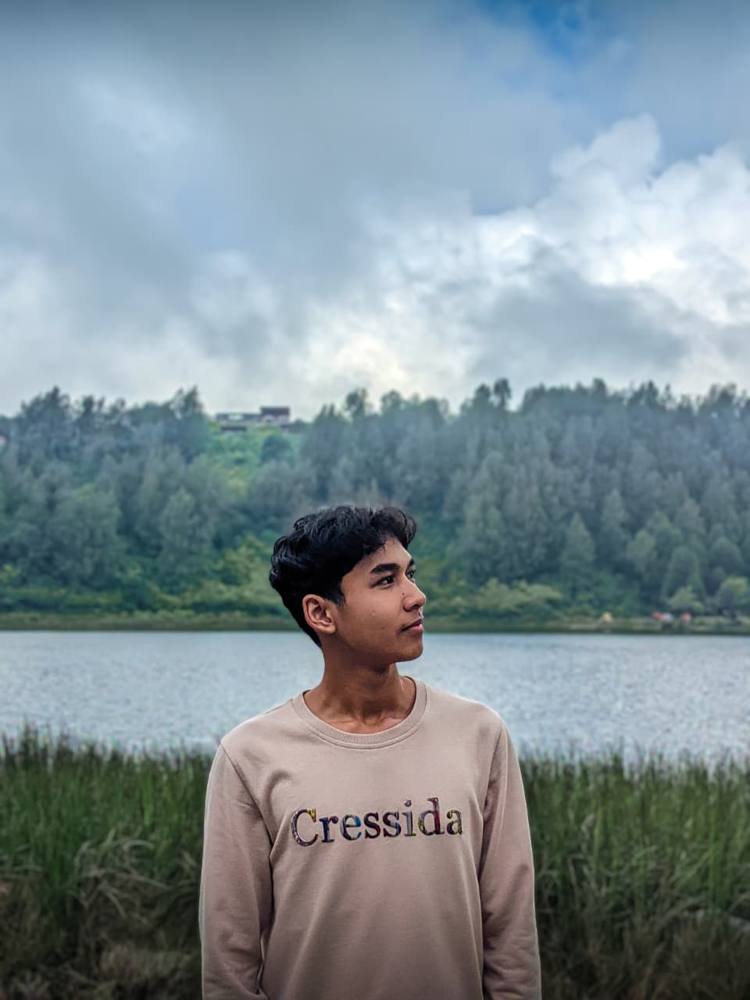

Fakultas Ilmu Komputer - Universitas Jember
Disini, aku belajar banyak hal mulai dari database, struktur data, algoritma dan lain lain.
halooo, akuu
Mahasiswa Informatika Universitas Jember yang lagi belajar software development.

Aku Mahasiswa Informatika yang lagi belajar IT mulai dari nol, sekarang aku masih fokus buat ngembangin skill backend dan web development mulai dari projek pribadi atau tugas kuliah biasa. Selain itu aku juga aktif di kepanitiaan mulai dari aku sma sampai saat ini. Di kepanitiaan itu lah aku ngembangin soft skill ku berupa kerja sama tim dan juga komunikasi yang bantu aku untuk memperluas relasi.
jujur, aku masih belajar tentang ini semua dari nol
Disini, aku belajar banyak hal mulai dari database, struktur data, algoritma dan lain lain.
Disini, aku belajar mulai dari pelajaran umum, organisasi dan pengalaman unik lainnya.